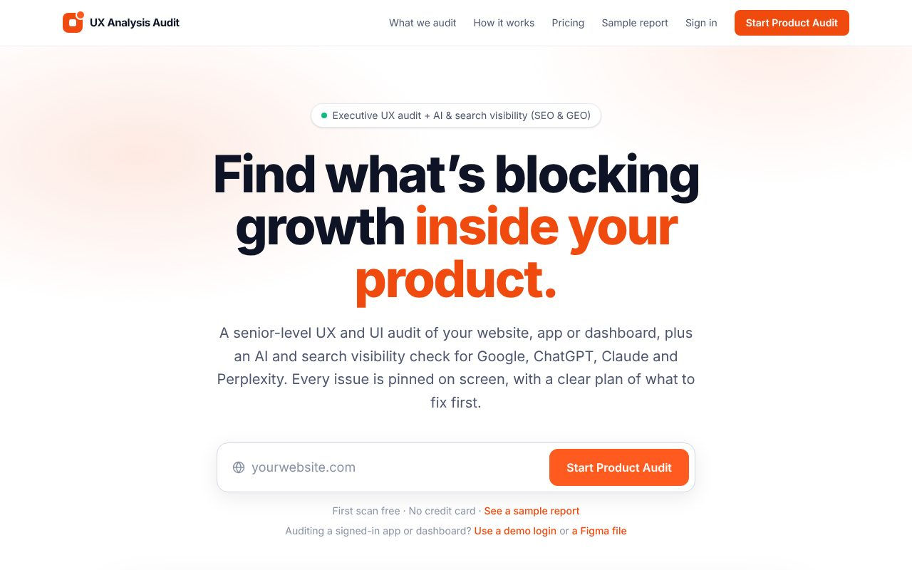
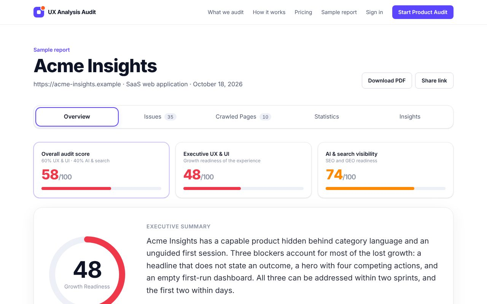
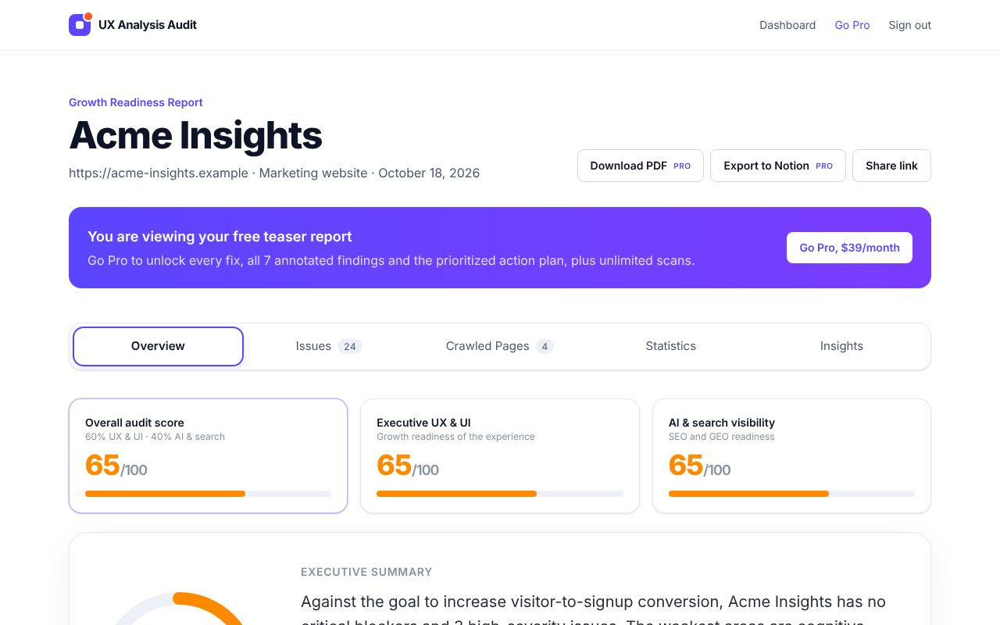
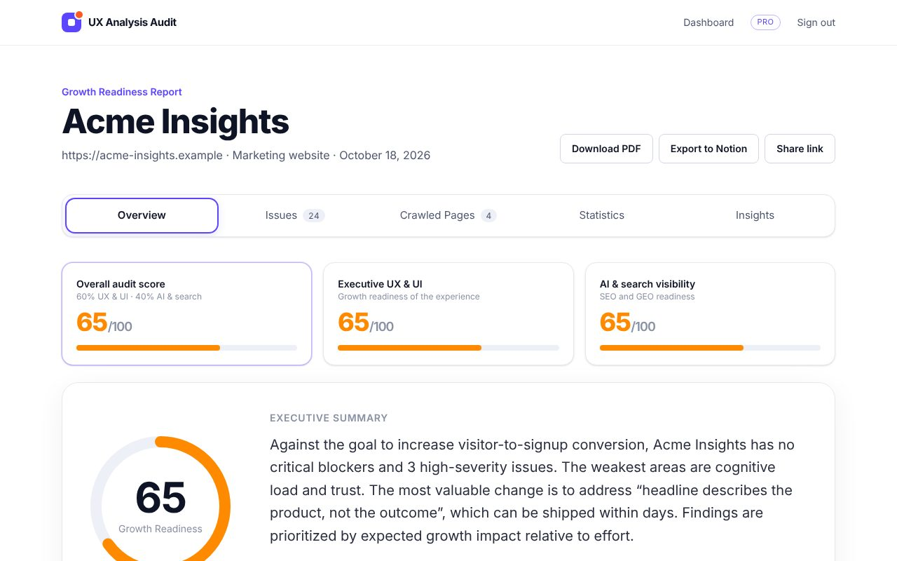
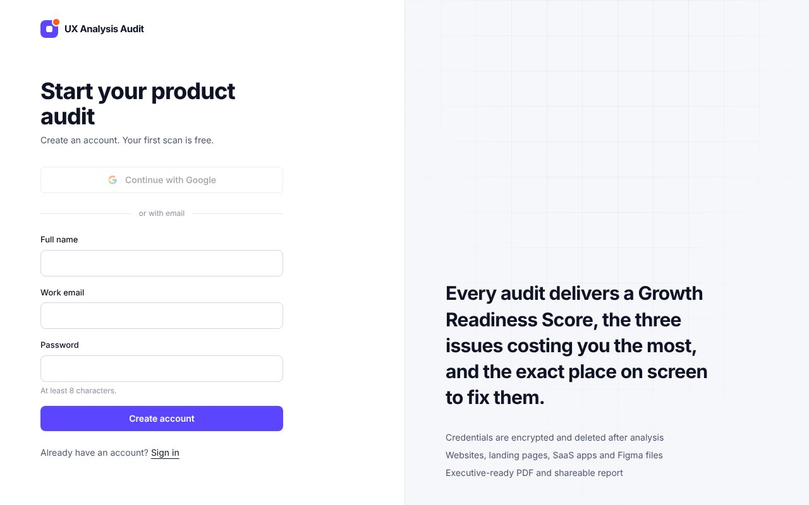
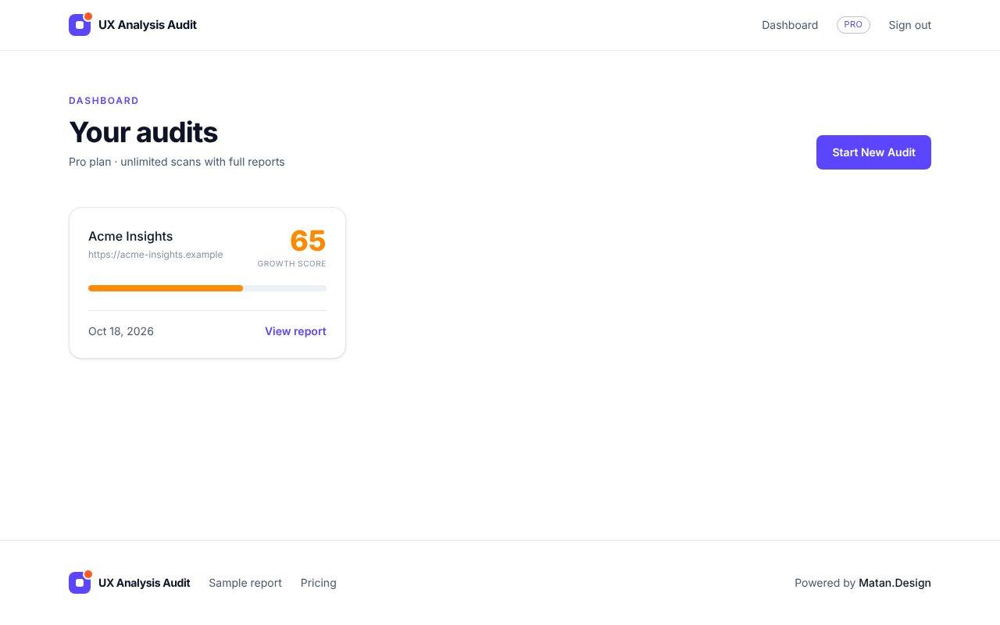
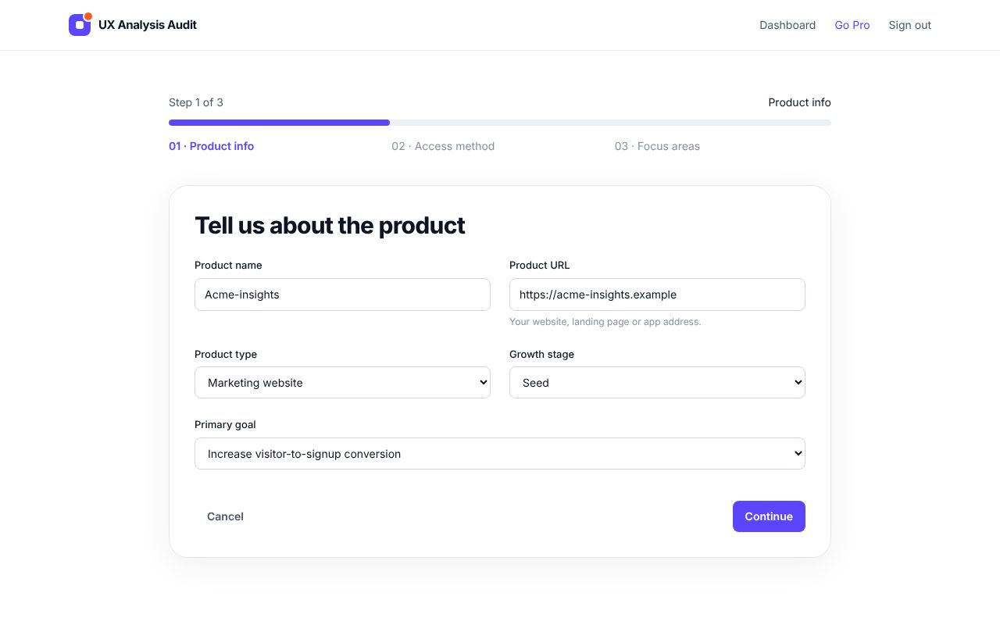
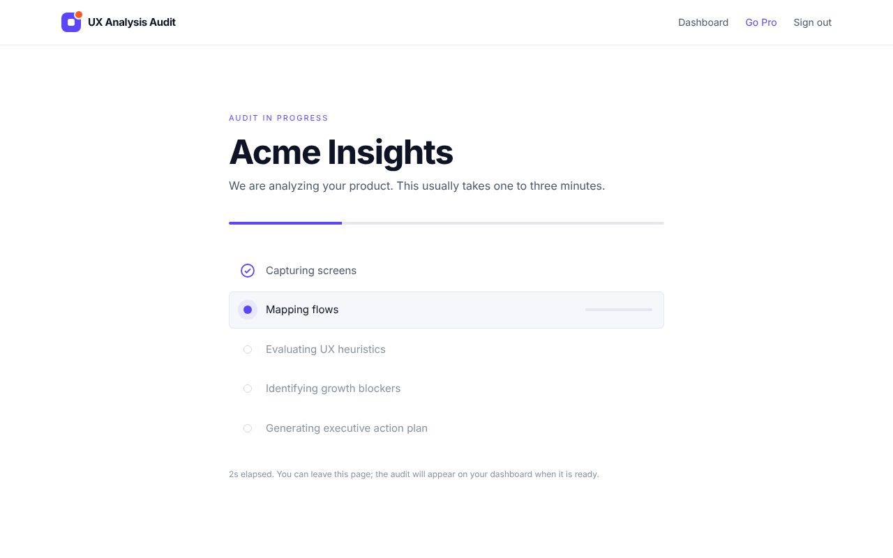
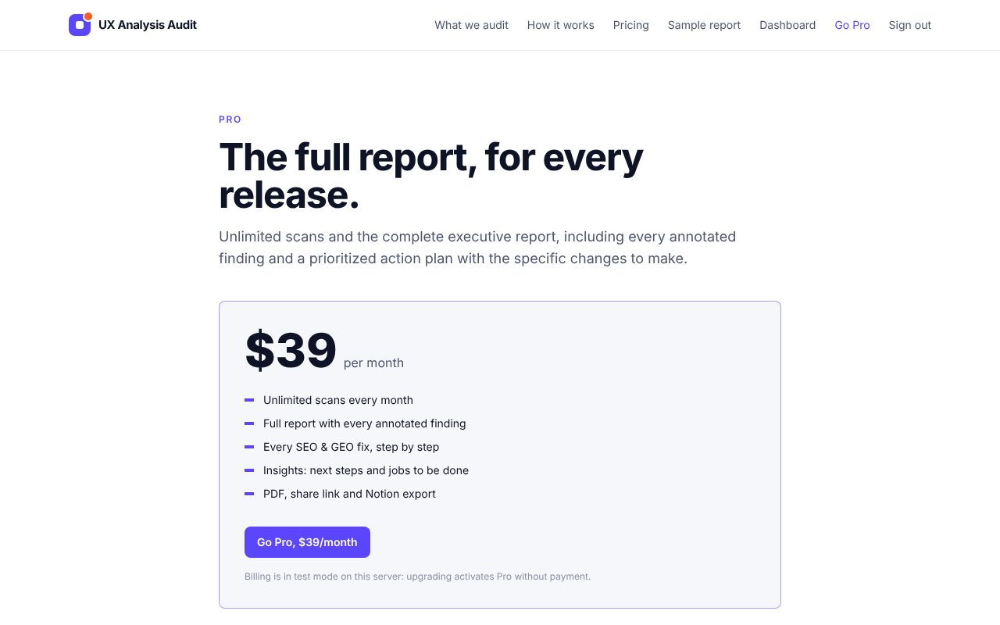
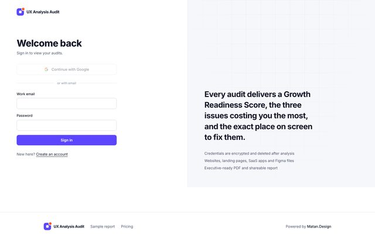

Every screen below is the real app, rendered from the latest build and fully clickable: report tabs, issue filters, “How to fix it” panels, Insights checklists and animations all work.
This preview has no server behind it. Sign-up, new scans and payments are simulated, so any URL you enter leads to the example audit. To run real audits, deploy the repo on Render: github.com/kidmatik/ux-analysis-audit
Marketing site

Centered URL field, the two audit pillars, animated KPI cards, benchmarks, stat cards with annotated screenshots, and pricing.
Open landing pageReports

Acme Insights with every tab: Overview, Issues, Crawled Pages, Statistics and Insights, across UX & UI and AI & search.
Pro · full report
What a new user sees after their free scan: scores, top issues and locked fixes with an upgrade prompt.
Free · teaser
The scan above after going Pro: every fix, the SEO & GEO checklist and the Insights plan.
Pro · $39/monthApp flow

Google or email. Continuing opens the dashboard.

Your audits with their scores. Start a new audit from here.

Three steps: product, access method (URL, demo login, Figma, recording, upload) and focus areas.

The five analysis stages, then the report opens on its own.

Pro at $39 a month for unlimited scans and full reports.

Returning users sign in and land on their dashboard.